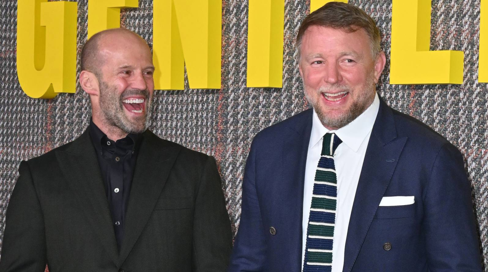
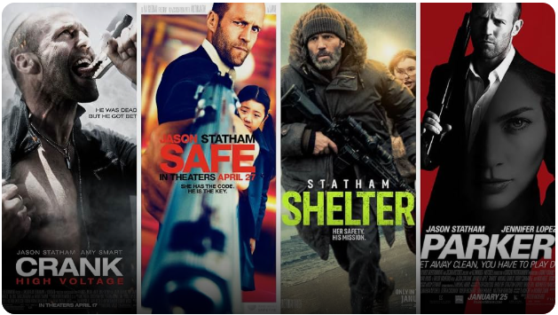
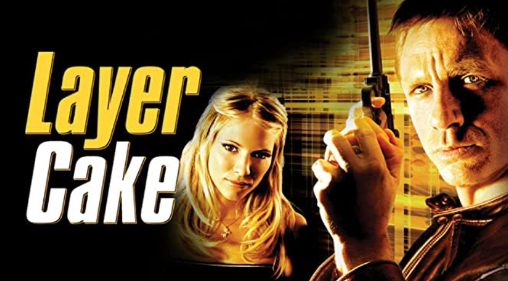

如果有一对组合，只要把名字放在一起就能让硬核影迷心跳加速的，那一定是盖·里奇与杰森·斯坦森。

这对英国老搭档，一个是用《两杆大烟枪》《偷拐抢骗》把英式黑帮片玩出花的鬼才导演，一个是从街头混混一路打成全球顶级动作巨星的硬汉。时隔多年，他们又要一起"干一票大的"了。
让我们先看看这对黄金搭档到底合作了多少部电影：
《两杆大烟枪》（Lock, Stock and Two Smoking Barrels, 1998）： 杰森·斯坦森的银幕处女作。盖·里奇用精妙的多线叙事和黑色幽默挖掘了斯坦森的表演天赋，影片也成为了黑帮犯罪片的旷世神作。
《偷拐抢骗》（Snatch, 2000）： 两人再度联手的英伦黑帮经典，斯坦森在片中饰演冷面幽默的拳击经理人，与布拉德·皮特等人贡献了极具风格化的群像戏。
《转轮手枪》（Revolver, 2005）： 盖·里奇执导的一部带有心理悬疑与哲学思辨色彩的犯罪骗局电影。
《人之怒》（Wrath of Man, 2021）： 暌违多年的回归之作，改编自法国电影，斯坦森化身冷酷的运钞车卧底，为子复仇，整体风格相较早期作品更为沉郁、硬朗。
《金爆行动》（Operation Fortune: Ruse de guerre, 2023）： 一部融合了环球冒险与黑色幽默的动作喜剧特工片，讲述特工团队阻止致命人工智能武器交易的故事。
《疯狂万岁》（Viva La Madness）： 改编自《双面任务》（Layer Cake）原著小说的同名续集作品，目前暂未上映。
而现在，第七部来了。
片名暂定《Dogfight》（暂译《狗斗》/《空战》）， 两人宣布第七度合作的全新力作！这是一部由 Netflix 筹备的黑帮复仇惊悚片，主舞台设定在英国黑社会，由盖·里奇自编自导，杰森·斯坦森主演并兼任制片人，预计于 2027 年初正式开镜。

压在手里的第六部电影，同样值得一看。
《疯狂万岁》改编自康诺利的同名小说，而这本小说本身是 2004 年《夹心蛋糕》（丹尼尔・克雷格主演那部）的续集小说。不过片方明确表示，电影定位为独立原创作品，不直接续接前作，没看过老片也完全不影响。

剧情线很斯坦森：一个没有名字的主角，先在加勒比海蛰伏，等前一桩买卖留下的风头彻底过去，再悄然返回伦敦。原著小说围绕性、诈骗、毒品和黑钱展开，主角是伦敦一个代号 X 的毒贩，底子非常黑。
阵容更是豪华：《偷拐抢骗》的老搭档维尼・琼斯时隔二十五年后回归，加上《白莲花度假村》的詹森・艾萨克、《沙丘》的巴巴克・奥卢桑莫昆、《河谷镇》的卡米拉・门德斯、本・福斯特和强尼・李・米勒。影片定于 2028 年 1 月 21 日北美上映。
老搭档重聚，老班底回归，老题材翻新。对于从《两杆大烟枪》一路看过来的观众来说，这或许不只是一部新片，更像是一场久别重逢。